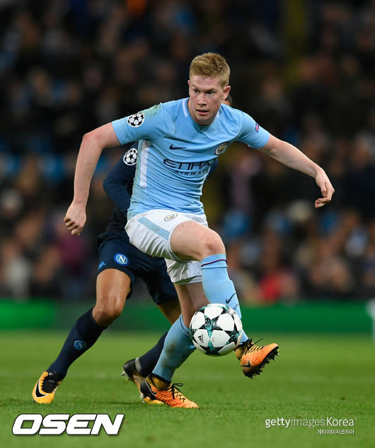

데브라이너
케빈 더 브라위너(Kevin De Bruyne, 1991년 6월 28일 ~ )는 벨기에의 축구 선수이며,
현재 잉글랜드 프리미어리그의 맨체스터 시티 소속으로 포지션은 중앙 미드필다.
하프라인과 공격 진영을 오가며 넓은 시야와 정확한 킥력으로 경기를
전개시키는 유형의 미드필더다.
공격 진영에서의 중거리 슈팅과 득점 능력도 뛰어나 전술의 시발점이 되기도 한다.
2015-2016시즌 초기에는 맨체스터 시티 FC의 4-2-3-1 포메이션에서 주로 오른쪽 윙어로 출전하며,
공격형 미드필더에는 다비드 실바가 출전하였으나, 최근에는 더 브라이너가 공격형 미드필더로 출전한다.
2017/2018 시즌에 들어서는 다비드 실바가 공격진영에서 자유롭게 돌아다니는 역할이고,
케빈 더 브라위너는 3선까지 내려와서 공격의 시작점이 되며 경기 전체를
조율하는 역할로 바뀌었다.